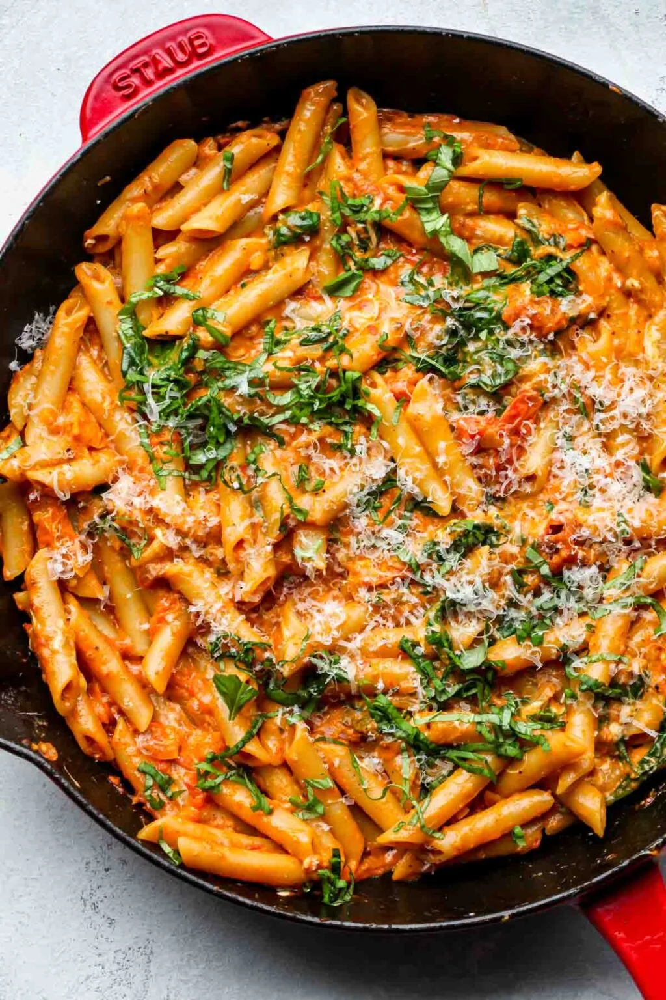

Cream Cheese Veggie Pasta

Description
This cream cheese veggie pasta is my ultimate comfort food when I want something creamy, filling, and packed with fresh veggies. The rich, velvety sauce made from cream cheese gives the dish a deliciously smooth texture, while the sautéed vegetables add a burst of flavor and crunch. It's super easy to customize—you can toss in whatever veggies you have on hand, like bell peppers, zucchini, or spinach. Plus, with just a few simple ingredients, this pasta comes together quickly, making it perfect for a cozy weeknight dinner or when you want a satisfying meal without a lot of fuss.
Blah blah blah
Ingredients
- 12 oz pasta (penne, fusilli, or your choice)
- 2 tablespoons olive oil
- 3 cloves garlic, minced
- 1 small onion, finely chopped
- 1/2 cup zucchini, sliced
- 1/2 cup bell peppers, sliced
- 1 cup spinach or kale (optional)
- 8 oz chopped mushrooms
- 12 oz tomato paste
- 8 oz cream cheese, softened
- 1/2 cup milk (or more for desired consistency)
- 1/4 cup grated Parmesan cheese OR more. Make yourself happy
- salt and pepper to taste
- Red pepper flakes (optional, for some spice)
- Garlic powder
- Onion powder
- Paprika
- Italian Seasoning, alot of it
- Bouillon
Steps
- Cook the pasta: Bring a large pot of salted water to a boil and cook the pasta according to the package instructions until al dente. Drain and set aside, keeping 1/2 cup of the pasta water for later use.
- Sauté the aromatics: In a large pan, heat the olive oil over medium heat. Add the minced garlic and chopped onion, sautéing for about 2-3 minutes until soft and fragrant.
- Cook the veggies: Add the sliced zucchini, bell peppers, and mushrooms to the pan. Sauté for 5-7 minutes until the vegetables are tender. If using spinach or kale, toss it in toward the end, allowing it to wilt down.
- Create the sauce base: Lower the heat and add the tomato paste to the pan, stirring it through the veggies. Cook for 1-2 minutes to let the tomato paste deepen in flavor.
- Add the cream cheese: Stir in the softened cream cheese until it melts into the tomato paste and vegetables, forming a creamy mixture. Slowly pour in the milk to help thin the sauce to your desired consistency.
- Season the sauce: Season generously with salt, pepper, red pepper flakes (if you want spice), garlic powder, onion powder, paprika, and a lot of Italian seasoning. Add a bouillon cube or bouillon powder for extra depth. Stir everything together, allowing the flavors to meld.
- Combine with pasta: Toss the cooked pasta into the sauce, mixing everything thoroughly. If the sauce is too thick, add some of the reserved pasta water to loosen it up.
- Finish and serve: Sprinkle the grated Parmesan cheese on top, adjusting the amount to your preference. Let the pasta simmer for 1-2 minutes, then serve hot, garnished with more Parmesan if desired. Enjoy!